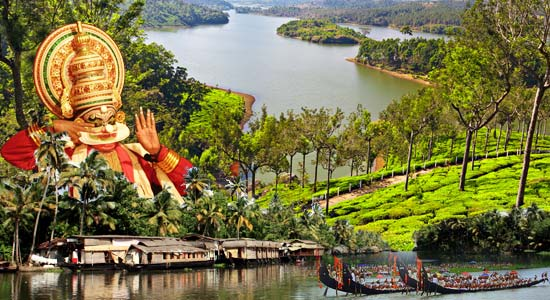
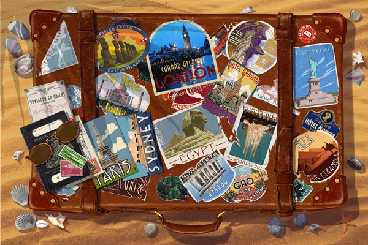

Metaphorically speaking I wear many hats throughout my life. Each and everyday I take on very different roles. Everyday I am a nerd, a freelance programmer, a student, a technician, a facebooker, a traveller, a photographer, a friendly-neighbourhood-computer-repairman. Huha!!

I hail from the tropical state of Kerala in the southernmost tip of the country, known as "God's own country".
It's when you are away from home that you understand all it provides.
She is one big, perfect life support unit: Optimum temperature, rainfall, atmosphere, sunshine and lots of greenery, culture and good people. All year long. No crazy weather stuff.
Boy, Am I lucky?
"Without music, life would be a mistake."
- Friedrich Nietzsche, Twilight of the Idols, Or, How to Philosophize With the Hammer
"One good thing about music, when it hits you, you feel no pain."
- Bob Marley
I always somehow end up travelling a lot. I've visited several countries including the war-torn Israel-Palestine and Egypt. I've also been to places in India as north as the Wagah Border in Punjab to Kolkata in the east (close to where I stay these days) as well as most of South India (home).
{kind=link}
{kind=link}
{kind=link}